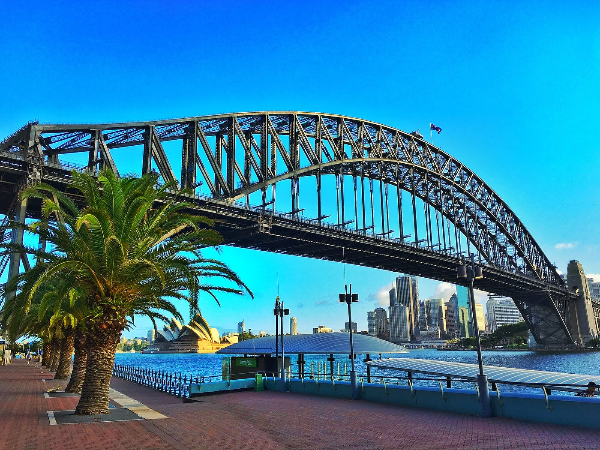
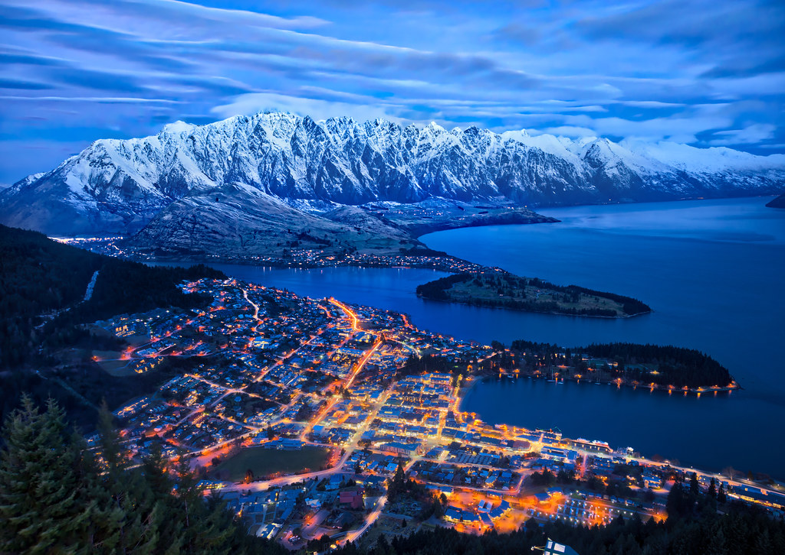
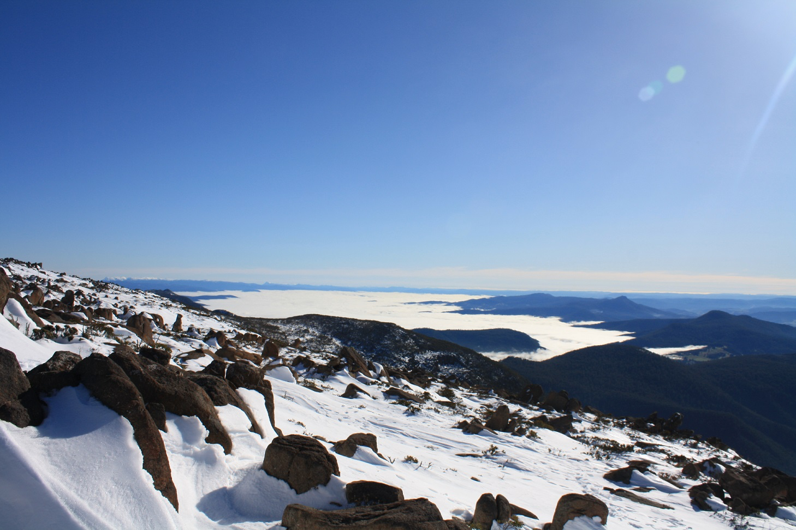
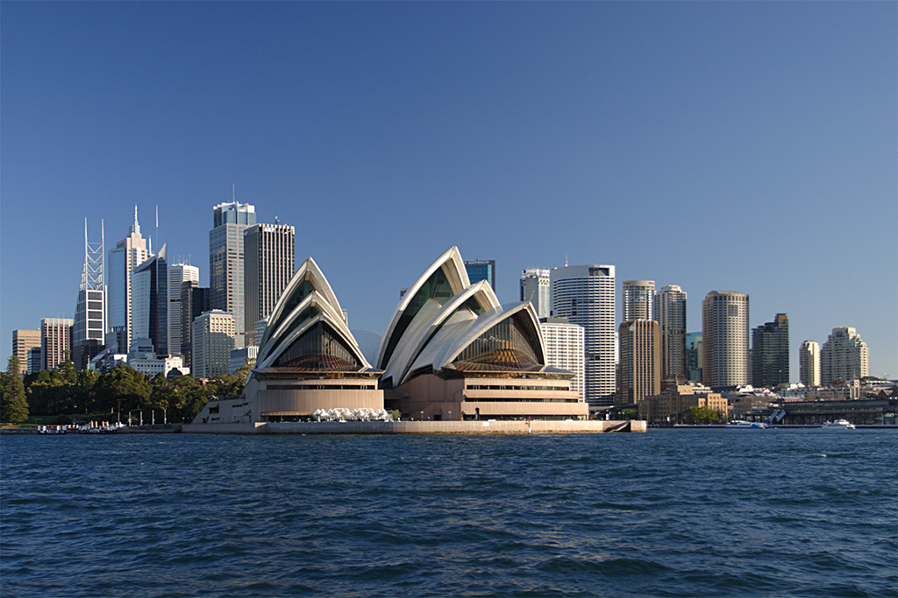
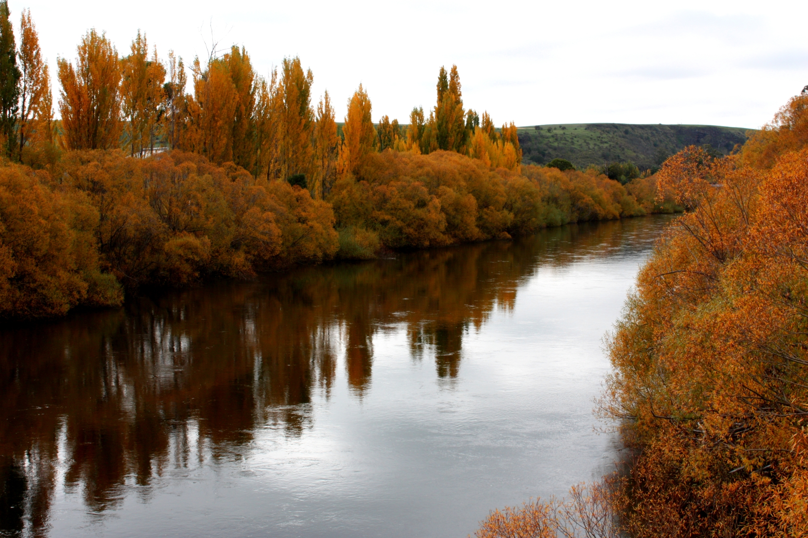
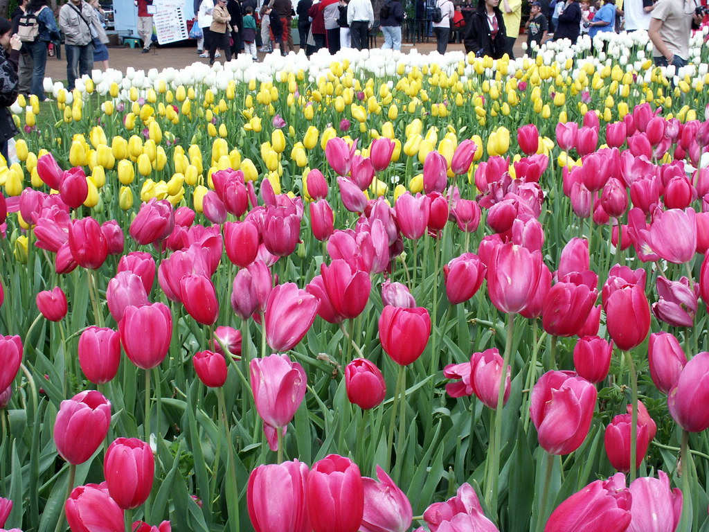
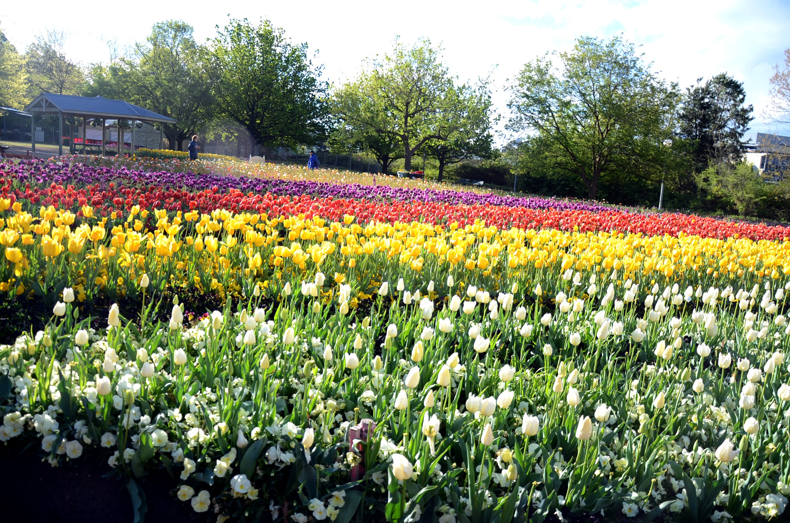

Australia
Where land meets endless ocean

Queenstown is a top adventure destination surrounded by mountains and lakes. Winter brings snow and excellent skiing conditions. Visitors can enjoy thrilling activities and scenic views.
🎯 Things to do:
- Skiing
- Snowboarding
- Bungee jumping
- Hiking
- Photography
- Scenic tours

Great Barrier Reef
📍 Location: Australia
🌤️ Best Months: December – March
The Great Barrier Reef is the world's largest coral reef system, stretching over 2,300 kilometers along the coast of Queensland, Australia. It is home to a diverse array of marine life and offers incredible opportunities for snorkeling and diving.
🎯 Things to do:
- Snorkeling
- Diving
- Boat tours
- Marine tours
- Photography
- Relaxing

Tasmania
📍 Location: Australia
🌤️ Best Months: November – March
Tasmania is an island state of Australia known for its rugged landscapes, pristine wilderness, and rich cultural heritage. In winter, the island offers opportunities for hiking, wildlife spotting, and exploring its many national parks and historical sites.
🎯 Things to do:
- Hiking
- Wildlife spotting
- Photography
- Camping
- Scenic drives
- Exploration

Mount Hotham
📍 Location: Victoria, Australia
🌤️ Best Months: June – August
Mount Hotham is a popular ski resort in Victoria, Australia, known for its excellent snow conditions and well-groomed slopes. In winter, the resort offers a range of skiing and snowboarding opportunities, as well as other winter activities. Visitors can also enjoy the scenic beauty of the surrounding alpine environment.
🎯 Things to do:
- Skiing
- Snowboarding
- Photography
- Hiking
- Dining
- Relaxing

Sydney
📍 Location: New South Wales, Australia
🌤️ Best Months: December – February
Sydney shines in summer with golden beaches, vibrant harbor views, and iconic landmarks like the Opera House. The city buzzes with outdoor festivals, coastal walks, and surfing culture, making it one of the best destinations in the Southern Hemisphere for sun, sea, and energetic city life.
🎯 Things to do:
- Visit the Sydney Opera House
- Relax at Bondi Beach
- Walk the Bondi to Coogee coastal trail
- Take a harbor cruise
- Explore Darling Harbour
- Watch New Year’s fireworks

Gold Coast
📍 Location: Gold Coast
🌤️ Best Months: December – February
The Gold Coast is Australia’s ultimate summer playground, known for endless beaches, surfing culture, and thrilling theme parks. Warm waters and sunny days create perfect conditions for swimming, nightlife, and adventure, making it a top destination for both relaxation and excitement.
🎯 Things to do:
- Surf at Surfers Paradise
- Visit theme parks
- Relax on beaches
- Explore Burleigh Heads
- Go nightlife hopping
- Coastal walks

Byron Bay
📍 Location: Australia
🌤️ Best Months: December – February
Byron Bay is a relaxed coastal town famous for its laid-back vibe, surfing culture, and stunning sunsets. In summer, it becomes a vibrant hub for beach lovers, musicians, and travellers seeking natural beauty and a peaceful yet energetic atmosphere.
🎯 Things to do:
- Visit Cape Byron Lighthouse
- Surffing
- Watch sunrise
- Explore markets
- Swimming
- Coastal walks
Great Barrier Reef
📍 Location: Queensland, Australia
🌤️ Best Months: December – March
The Great Barrier Reef is the world's largest coral reef system, stretching over 2,300 kilometers along the coast of Queensland, Australia. It is home to a diverse array of marine life and offers incredible opportunities for snorkeling and diving.
🎯 Things to do:
- Snorkeling
- Diving
- Boat tours
- Glass-bottom boat
- Photography
- Relaxing

Melbourne
📍 Location: Victoria, Australia
🌤️ Best Months: March – May
Melbourne is a vibrant city known for its cultural scene, beautiful parks, and excellent food. In winter, the city offers a range of indoor activities and events, while still providing opportunities for outdoor exploration.
🎯 Things to do:
- Visit museums
- Explore laneways
- Try café culture
- Royal Botanic Gardens
- See street art
- Yarra River walks

Hunter Valley
📍 Location: Australia
🌤️ Best Months: March – May
Hunter Valley is a renowned wine region in New South Wales, Australia, famous for its excellent vineyards and scenic landscapes. The area offers a range of wine-tasting experiences and outdoor activities throughout the year.
🎯 Things to do:
- Wine tasting
- Hot air balloon rides
- Vineyard walks
- Gourmet dining
- Photography
- Scenic drives

Tasmania
📍 Location: Australia
🌤️ Best Months: November – March
Tasmania is an island state of Australia known for its rugged landscapes, pristine wilderness, and rich cultural heritage. In winter, the island offers opportunities for hiking, wildlife spotting, and exploring its many national parks and historical sites.
🎯 Things to do:
- Hiking
- Wildlife spotting
- Photography
- Camping
- Scenic drives
- Exploration

Adelaide Hills
📍 Location: South Australia
🌤️ Best Months: March – May
Adelaide Hills is a picturesque region in South Australia, known for its rolling hills, vineyards, and charming towns. In winter, the area offers a range of outdoor activities and scenic views. Visitors can also enjoy the local wine culture and gourmet dining experiences.
🎯 Things to do:
- Wine tasting
- Visit Hahndorf
- Orchard picking
- Scenic drives
- Café hopping
- Hiking trails

Perth
📍 Location: Western Australia
🌤️ Best Months: March – May
Perth is the capital city of Western Australia, known for its beautiful parks, beaches, and vibrant cultural scene. In winter, the city offers a range of indoor activities and outdoor events.
🎯 Things to do:
- Visit Kings Park
- Explore the Swan River
- Go shopping
- Coastal drives
- Photography
- Scenic tours

Canberra
📍 Location: Australia
🌤️ Best Months: September – November
Canberra is the capital city of Australia, known for its planned layout, national museums, and cultural attractions. In winter, the city offers a range of indoor activities and events.
🎯 Things to do:
- Visiting museums
- Exploring national parks
- Shopping
- Dining
- Attending events
- Relaxing

Adelaide
📍 Location: South Australia
🌤️ Best Months: September – November
Adelaide is the capital city of South Australia, known for its vibrant cultural scene, beautiful parks, and excellent food and wine. In winter, the city offers a range of indoor activities and outdoor events.
🎯 Things to do:
- Visit Barossa
- Botanic Gardens
- festivals
- local wines
- Visit beaches
- Food Tours

Brisbane
📍 Location: Queensland, Australia
🌤️ Best Months: September – November
Brisbane is the capital city of Queensland, Australia, known for its tropical climate, vibrant cultural scene, and beautiful riverside location. In winter, the city offers a range of indoor activities and outdoor events.
🎯 Things to do:
- Queensland Museum
- Explore South Bank
- Walk South Bank
- Explore parks
- Dining
- Day trip to islands

Mount Cook
📍 Location: New Zealand
🌤️ Best Months: November – March
Mount Cook is the highest mountain in New Zealand. It offers glaciers, lakes, and stunning alpine scenery. Visitors can enjoy hiking and photography in a peaceful environment.
🎯 Things to do:
- Camping
- Exploration
- Glacier tours
- Hiking
- Photography
- Sightseeing

Mount Ruapehu
📍 Location: New Zealand
🌤️ Best Months: June – October
Mount Ruapehu is an active stratovolcano in the North Island of New Zealand. It offers stunning views, skiing opportunities, and the chance to see the famous crater lake.
🎯 Things to do:
- Skiing
- Snowboarding
- Photography
- Hiking
- Exploration
- Sightseeing

Blue Mountains
📍 Location: Australia
🌤️ Best Months: March – May, September – November
The Blue Mountains are a mountain range located in New South Wales, Australia. They are known for their distinctive blue hue, caused by eucalyptus oils in the air, and offer stunning views, hiking trails, and natural beauty. In winter, the area provides opportunities for outdoor activities and exploring its unique landscapes.
🎯 Things to do:
- Hiking
- Sightseeing
- Photography
- Cable cars
- Exploration
- Walking

Mount Taranaki
📍 Location: Victoria, Australia
🌤️ Best Months: December – April
Mount Taranaki is a dormant volcano in the North Island of New Zealand. It offers stunning views, hiking opportunities, and the chance to explore its unique geological features.
🎯 Things to do:
- Hiking
- Exploration
- Photography
- Sightseeing
- Camping
- Nature walks